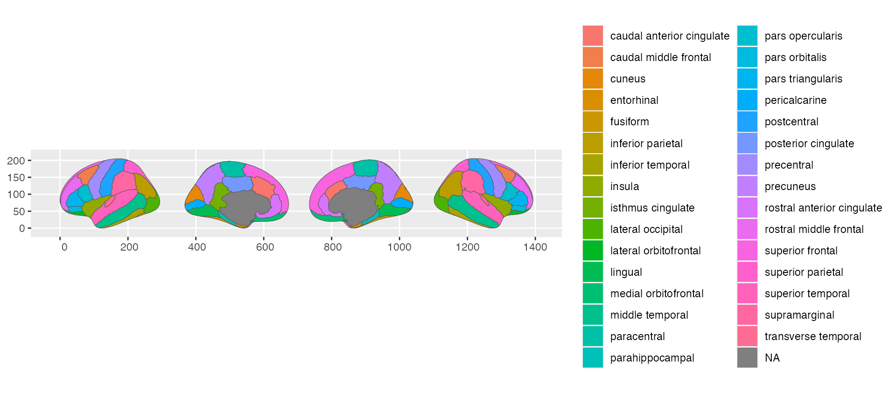

Using the ggseExtra package requires the two main ggseg-packages, containing the functions needed to plot the data. ggsegExtra is a meta-repository of data-sets that fit with the functions in those main packages, with functions to help you create your own custom atlases.
Installing atlases
Atlases are stored in their own online repositories. The list of repositories is periodically updated based on when we have confirmed a new atlas that works with the packages. These data-sets can be in our own github account (LCBC-UiO), or be hosted by whoever made the atlas. To see all confirmed atlases:
ggseg_atlas_repos()
## # A tibble: 11 x 6
## repo ggseg ggseg3d source comment package
## <chr> <lgl> <lgl> <chr> <chr> <chr>
## 1 LCBC-UiO/ggseg… TRUE TRUE github both 17 and 7 Network data ggsegYeo20…
## 2 LCBC-UiO/ggseg… FALSE TRUE github the 2009 atlas ggsegDeste…
## 3 LCBC-UiO/ggseg… FALSE TRUE github both thickness and area maps ggsegChen
## 4 LCBC-UiO/ggseg… FALSE TRUE github both 17 and 7 networks ggsegSchae…
## 5 LCBC-UiO/ggseg… TRUE TRUE github full atlas ggsegGlass…
## 6 LCBC-UiO/ggseg… TRUE TRUE github white tract atlas ggsegJHU
## 7 LCBC-UiO/ggseg… TRUE TRUE github white tract atlas ggsegTracu…
## 8 LCBC-UiO/ggseg… FALSE TRUE github white tract atlas ggsegICBM
## 9 LCBC-UiO/ggseg… TRUE FALSE github Harvard-Oxford cortical (FS… ggsegHO
## 10 LCBC-UiO/ggseg… TRUE FALSE github extra 2d view for dk, p/a d… ggsegDefau…
## 11 LCBC-UiO/ggseg… TRUE TRUE github Desikan-Killiany-Tourville … ggsegDKT
# Search for repos with pattern
ggseg_atlas_repos("Yeo")
## # A tibble: 1 x 6
## repo ggseg ggseg3d source comment package
## <chr> <lgl> <lgl> <chr> <chr> <chr>
## 1 LCBC-UiO/ggsegYeo20… TRUE TRUE github both 17 and 7 Network d… ggsegYeo20…
# Search is case-sensitive
ggseg_atlas_repos("yeo")
## # A tibble: 0 x 6
## # … with 6 variables: repo <chr>, ggseg <lgl>, ggseg3d <lgl>, source <chr>,
## # comment <chr>, package <chr>
# Search is case-sensitive, but this can be fixed
ggseg_atlas_repos("yeo", ignore.case = TRUE)
## # A tibble: 1 x 6
## repo ggseg ggseg3d source comment package
## <chr> <lgl> <lgl> <chr> <chr> <chr>
## 1 LCBC-UiO/ggsegYeo20… TRUE TRUE github both 17 and 7 Network d… ggsegYeo20…Installing atlases from the repos, we have conveniene function, wrapping install commands from the remotes package.
yeo_repo <- ggseg_atlas_repos("yeo", ignore.case = TRUE)
if (!requireNamespace("ggsegYeo2011", quietly = TRUE)) {
install_ggseg_atlas(repo = yeo_repo$repo, source = yeo_repo$source)
}
2d atlases with ggseg
You should be able to easily switch the atlases, after loading ggsegExtra, so rather plot one of the ggsegExtra atlases directly to the function.
# load on all atlases and palettes from the ggsegYeo2011 library
library(ggsegYeo2011)
ggseg(atlas = yeo7)
ggseg(atlas = yeo17)
If you want to make sure it looks properly like the atlas you are after, or you want to plot an example of the original plot. Most of the datasets also have corresponding palettes from the papers they were introduced from. These colour-scales can be applied through the scale_X_brain functions, and you must also specify which package the palette comes from.
ggseg(atlas = yeo7,
mapping=aes(fill = region)) +
scale_fill_brain("yeo7", package="ggsegYeo2011")
3d plots with ggseg3d
The same goes for ggseg3d, the new atlases, now available through the ggsegExtra package, can be plotted with the ggseg3d function and its helpers.
library(ggseg3d)
ggseg3d(atlas = yeo7_3d) %>%
pan_camera("right lateral")
ggseg3d(atlas = yeo17_3d) %>%
pan_camera("right lateral")